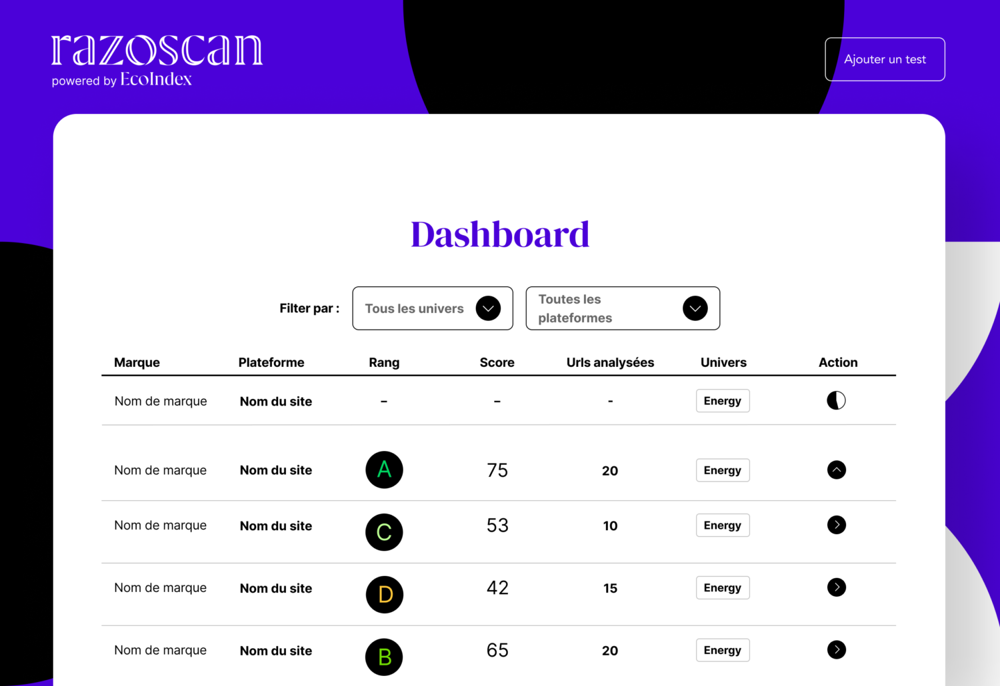

« Chez Razorfish, nous sommes convaincus qu’il est possible de faire converger les révolutions digitales et écologiques et de créer des expériences digitales qui soient à la fois belles, utiles, et moins gourmandes en ressources. Nous sommes également convaincus que les digital makers que nous sommes ont la responsabilité de proposer les moyens techniques et humains pour faire progresser les organisations. » explique Sandrine Vissot-Kelemen, Présidente de Razorfish France.
Au cœur de grands enjeux, la pollution invisible provoquée par le numérique, représente 3 à 4% des émissions à effets de serre dans le monde selon l’ARCEP. Cette dernière ajoute que “les émissions en GES du numérique pourraient augmenter de manière significative si rien n’est fait pour en réduire l’empreinte : + 60 % d’ici à 2040”.
Razoscan, le premier baromètre de l’écoconception digitale voit le jour en … . Fruit de la collaboration entre l’agence Razorfish et le collectif Green IT, Razoscan est présenté par ses créateurs comme la solution permettant de mesurer, de piloter et d’améliorer l’empreinte environnementale des plateformes digitales des entreprises.